In this lesson, you’ll implement a rating control for the FoodTracker app. When you’re finished, your app will look something like this:
このレッスンでは、あなたは格付けコントロールをFoodTrackerアプリに実装します。あなたが作業し終わった時、あなたのアプリはこのようなものに見えるでしょう：
Learning Objectives
学習する目標
At the end of the lesson, you’ll be able to:
このレッスンの終わりに、あなたが出来るようになるのは：
Create and associate custom source code files with elements in a storyboard
カスタムソースコードを作成してストーリーボードの要素と結びつける
Define a custom class
カスタムクラスを定義する
Implement an initializer on a custom class
カスタムクラス上でイニシャライザを実装する
Use UIStackView as a container
UIStackViewをコンテナとして使う
Understand how to create views programmatically
どのようにビューを作成するかプログラム的に理解する
Add accessibility information to a custom control
アクセシビリティ情報をカスタムコントロールに加える
Work with @IBInspectable and @IBDesignable to display and control a custom view in Interface Builder
@IBInspectableと@IBDesignableで作業して、カスタムビューをInterface Builderにおいて表示する
Create a Custom View
カスタムビューの作成
To be able to rate a meal, users need a control that lets them select the number of stars they want to assign to the meal. There are many ways to implement this, but this lesson focuses on a straightforward approach, building a custom control by combining existing views and controls. You’ll create a stack view subclass that manages a row of buttons representing the stars. You’ll define your custom control entirely in code, and then add it to your storyboard.
食事に格付けできるようにするために、ユーザに必要なのはあるコントロールです、それは彼らがその食事に付けたい星の数を選ばせます。多くの方法がこれを実装するためにはあります、しかしこのレッスンは直接的な取り組みに焦点を当て、カスタムコントロールを既存のビューとコントロールを組み合わせることで構築します。あなたは、あるスタックビューサブクラスを作成し、それは星を表すボタンの列を管理します。あなたは、あなたのカスタムコントロールをすっかりコード中に定義して、それからそれをあなたのストーリーボードへ加えます。
The rating control appears as a row of stars.
格付けコントロールは、星の列として現れます。
Users can choose a rating for a meal. When a user taps a star, that star and the stars preceding it are filled in. If the user taps the rightmost filled in star (the star associated with the current rating), the rating is cleared and all stars are displayed as empty.
ユーザは、ある食事の格付けを選ぶことができます。ユーザがある星をタップするとき、その星とそれの前にある星が塗りつぶされます。ユーザが星で塗りつぶされた最も右（現在の格付けと関連する星）をタップするならば、格付けは消去されてすべての星は空として表示されます。
To begin designing the user interface (UI), interaction, and behavior of this control, start by creating a custom stack view (UIStackView) subclass.
設計をユーザインターフェイス (UI)、相互作用、そしてこのコントロールの挙動に対して始めるには、あるカスタムスタックビュー（UIStackView）サブクラスを作成することで始めます。
To create a subclass of UIStackView
UIStackViewのサブクラスを作成するには
Choose File > New > File (or press Command-N).
File > New > Fileを選んでください（またはコマンド-Nを押します）。
At the top of the dialog that appears, select iOS.
現れたダイアログの一番上で、iOSを選択してください。
Select Cocoa Touch Class, and click Next.
Cocoa Touch Classを選んで、Nextをクリックしてください。
In the Class field, type RatingControl.
Class欄において、RatingControlをタイプします。
In the “Subclass of” field, select UIStackView.
「Subclass of」欄で、UIStackViewを選択してください。
Make sure the Language option is set to Swift.
LanguageオプションがSwiftに設定されていることを確かめてください。
Click Next.
Nextをクリックしてください。
The save location defaults to your project directory.
保存場所は、初期状態であなたのプロジェクトディレクトリです。
The Group option defaults to your app name, FoodTracker.
Groupオプションは、初期状態であなたのアプリ名、FoodTrackerです。
In the Targets section, your app is selected and the tests for your app are unselected.
Targets区画において、あなたのアプリが選択されて、あなたのアプリのためのテストは選択されません。
Leave these defaults as they are, and click Create.
これらの初期値はそれらのままにしておきます、そしてCreateをクリックします。
Xcode creates a file that defines the RatingControl class: RatingControl.swift. RatingControl is a custom view subclass of UIView.
Xcodeは、RatingControlクラスを定義するファイル：RatingControl.swiftを作成します。RatingControlは、UIViewのカスタムのビュー・サブクラスです。
If necessary, in the Project navigator, drag the RatingControl.swift file so that it’s positioned under the other Swift files.
必要ならば、Projectナビゲータにおいて、RatingControl.swiftファイルをドラッグして、それでそれが他のSwiftファイルの下に置かれるようにします。
In RatingControl.swift, delete the comments that come with the template implementation so you can start working with a blank slate.
RatingControl.swiftにおいて、ひな形実装に付いてくるコメントを削除してください、それであなたは白紙の状態で作業を始めることができます。
The implementation should look like this:
実装はこのように見えるはずです：
importUIKit
classRatingControl: UIStackView {
}
You typically create a view in one of two ways: by programatically initializing the view, or by allowing the view to be loaded by the storyboard. There’s a corresponding initializer for each approach: init(frame:) for programatically initializing the view and init?(coder:) for loading the view from the storyboard. Recall that an initializer is a method that prepares an instance of a class for use, which involves setting an initial value for each property and performing any other setup.
あなたは概して、ビューを２つのやり方のうちの１つで作成します：ビューをプログラム的に初期化（イニシャライズ）することで、またはビューをストーリーボードによってロードされるようにすることで。それぞれの取り組み方に合ったイニシャライザがあります：ビューをプログラム的に初期化するためのinit(frame:)とビューをストーリーボードからロードするためのinit?(coder:)。思い出してください、イニシャライザ（初期化子）はひとつのメソッドです、それはクラスのインスタンスを使用する段取りを整えます、それには各プロパティに対する初期値の設定となんらかの他の設定の実行を伴います。
You will need to implement both of these methods in your custom control. While designing the app, Interface Builder programatically instantiates the view when you add it to the canvas. At runtime, your app loads the view from the storyboard.
あなたは、それらメソッドの両方をあなたのカスタムコントロールにおいて実装する必要があります。アプリ設計の間、Interface Builderはプログラム的にビューを、あなたがそれをキャンバスに加える時にインスタンス化します。実行時に、あなたのアプリはビューをストーリボードからロードします。
To override the initializers
これらイニシャライザをオーバーライドするには
In RatingControl.swift, under the class line, add this comment.
RatingControl.swiftにおいて、class行の下で、このコメントを加えてください。
//MARK: Initialization
Below the comment, start typing init.
このコメントの下で、initの入力を始めます。
The code completion overlay shows up.
コード補完重ね表示が現れてきます。
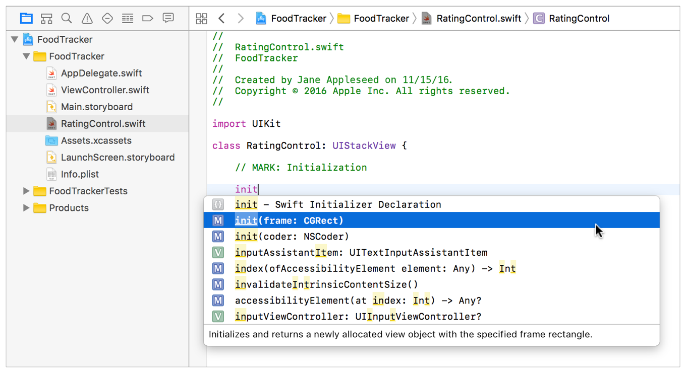
Select init(frame: CGRect) from the listed options, and press Return.
init(frame: CGRect)をリストされたオプションから選択してください、そしてReturnを押してください。
Xcode inserts the initializer skeleton for you.
Xcodeはそのイニシャライザの骨組みをあなたの代わりに挿入します。
init(frame: CGRect) {
}
Errors and warnings appear as yellow triangle icons (warnings) and red circles (errors) next to the code. Currently, the init(frame:) method has an error. Click on the error icon to bring up more information about the error.
エラーと警告は、黄色い三角形アイコン（警告）と赤い丸（エラー）としてコードの隣に現れます。現在、init(frame:)に１つのエラーがあります。エラーアイコンをクリックして、そのエラーについてさらなる情報を引き出してください。
Double-click the Fix-it to insert the override keyword.
Fix-itをダブルクリックすることで、overrideキーワードを挿入してください。
overrideinit(frame: CGRect) {
}
The Swift compiler knows that init(frame:) must be marked as required, and offers a fix-it to make this change in your code. Fix-its are provided by the compiler as potential solutions to errors in your code.
Swiftコンパイラは、init(frame:)がrequiredと印されなければならないことを知っています、そしてにあなたのコードでこの変更をするよう修正を提案します。これらFix-itは、コンパイラによってあなたのコード中のエラーに対する可能性のある解決策として提供されます。
Add this line to call the superclass’s initializer:
この行を加えてスーパークラスの持つイニシャライザを呼び出してください。
super.init(frame: frame)
Below the init(frame:) method, start typing init again, and select init(coder: NSCoder) from the code completion options. Press Return.
init(frame:)メソッドの下で、再びinitをタイプし始めて、そしてinit(coder: NSCoder)をコード補完の選択肢から選んでください。リターンキーを押します。
Xcode inserts the initializer skeleton for you.
Xcodeはそのイニシャライザの骨組みをあなたの代わりに挿入します。
init(coder: NSCoder) {
}
Use the Fix-it to insert the required keyword.
Fix-itを使ってrequiredキーワードを挿入してください。
Add this line to call the superclass’s initializer.
この行を加えてスーパークラスのイニシャライザを呼び出してください。
super.init(coder: coder)
The initializers should look like this:
それらイニシャライザはこのように見えるはずです：
overrideinit(frame: CGRect) {
super.init(frame: frame)
}
requiredinit(coder: NSCoder) {
super.init(coder: coder)
}
Right now, your initializers are placeholders that simply call the superclass’s implementation. You will add additional configuration steps later in this lesson.
今のところ、あなたのイニシャライザはプレースホルダであり、単にスーパークラスの持つ実装を呼び出します。あなたは、追加的な構成設定行程をこのレッスンの後で加えます。
Display the Custom View
カスタムビューの表示
To display your custom control, you need to add a stack view to your storyboard and establish a connection between the stack view and the code you just wrote.
あなたのカスタムコントロールを画面表示するには、あなたはあるスタックビューをあなたのストーリーボードに加えて、連結をスタックビューとあなたがちょうど書いたコードとの間に確立する必要があります。
To display the view
ビューを表示するには
Open your storyboard.
あなたのストーリーボードを開いてください。
In your storyboard, use the Object library to find a Horizontal Stack View object, and drag one into your storyboard scene so that it’s in the stack view below the image view.
あなたのストーリボードにおいて、オブジェクトライブラリを使うことで、Horizontal Stack Viewオブジェクトを見つけて、それをあなたのストーリーボードシーンへとドラッグしてそれがスタックビューの中でイメージビューの下になるようにしてください。
With the horizontal stack view selected, open the Identity inspector .
水平スタックビューが選択された状態で、Identityインスペクタを開いてください。
Recall that the Identity inspector lets you edit properties of an object in your storyboard related to that object’s identity, such as what class the object belongs to.
思い出してください、同一性インスペクタは、あなたにあなたのストーリーボードのあるオブジェクトのプロパティをそのオブジェクトの同一性に関して、例えばどのクラスにそのオブジェクトが所属するかなどを、編集させます。
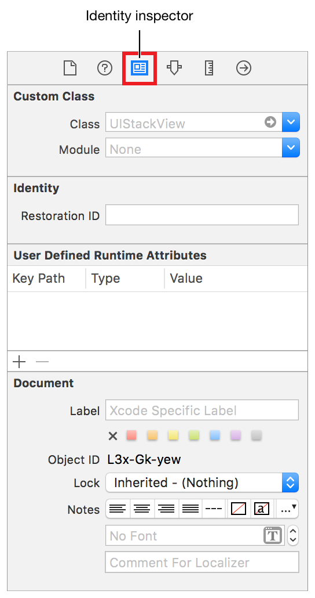
In the Identity inspector, find the field labeled Class and select RatingControl.
同一性インスペクタにおいて、Classとラベルをつけられる欄を探してRatingControlを選択してください。
Add Buttons to the View
ボタンをビューに加える
At this point, you’ve got the basics of a custom UIStackView subclass, called RatingControl. Next, you need to add buttons to your view to allow the user to select a rating. Start with something simple, like getting a single red button to show up in your view.
この時点で、あなたは基本的なカスタムUIStackViewサブクラス、RatingControlと呼ばれるものを手に入れています。次に、あなたが必要とするのは、ボタンをあなたのビューに加えてユーザが格付けを選べるようにすることです。始めに簡単なことをします、例えばひとつだけ赤いボタンをあなたのビューに表示させることのような。
To create a button in your view
ボタンをあなたのビューの中に作成するには
Make sure the button is added, regardless of which initializer is called. To do this, add a private method, setupButtons(), and call that method from both initializers.
ボタンが加えられることを確認してください、どのイニシャライザが呼ばれるかに構わずに。これを行うには、プライベートメソッド、setupButtons()を加えて、そのメソッドを両方のイニシャライザが呼び出してください。
In RatingControl.swift, under the initializer methods, add this comment.
RatingControl.swiftにおいて、そのイニシャライザメソッドの下で、このコメントを加えてください。
//MARK: Private Methods
Use the space below this comment to create private methods—methods with the private modifier before the func introducer. Private methods can only be called by code within the declaring class. This lets you encapsulate and protect methods, ensuring that they are not unexpectedly or accidentally called from the outside.
このコメントの下の空間を使ってプライベートメソッド — private修飾子をfunc導入子の前に持つメソッド、を作成してください。プライベートメソッドは、宣言しているクラス内のコードによってのみ呼び出されることができます。これは、あなたにメソッドをカプセル化させて保護させて、それらが思いがけなくまたは誤って外側から呼び出されないのを保証します。
Under the comment, add the following method:
コメントの下で、以下のメソッドを加えてください：
privatefuncsetupButtons() {
}
In the setupButtons() method, add the following lines of code to create a red button:
setupButtons()メソッドにおいて、以下のコード行を加えることで赤いボタンを作成してください。
// Create the button
letbutton = UIButton()
button.backgroundColor = UIColor.red
Here, you are using one of the UIButton class’s convenience initializers. This initializer calls init(frame:) and passes in a zero-sized rectangle. Starting with a zero-sized button is fine, because you’re using Auto Layout. The stack view will automatically define the button’s position, and you will add constraints to define the button’s size.
ここで、あなたはUIButtonクラスの持つ便宜イニシャライザの１つを使っています。このイニシャライザは、init(frame:)を呼び出して大きさゼロの長方形を渡します。大きさゼロのボタンで始めることは非常に良いことです、なぜならあなたは「自動レイアウト」を使うからです。スタックビューは、自動的にボタンの位置を定義します、そしてあなたは制約を加えることでボタンの大きさを定義します。
You are using red so it’s easy to see where the view is. If you’d like, use one of the other predefined UIColor values instead, like blue or green.
あなたはredを使っています、なのでビューがあるところを確認するのは簡単です。あなたが好むならば、他の既定のUIColor値の内の１つを代わりに使ってください、blueやgreenのように。
Below the last line, add the button’s constraints:
最後の行の下、ボタンの持つ制約を加えてください：
The first line of code disables the button’s automatically generated constraints. When you programmatically instantiate a view, its translatesAutoresizingMaskIntoConstraints property defaults to true. This tells the layout engine to create constraints that define the view’s size and position based on the view’s frame and autoresizingmask properties. Typically, when you are using Auto Layout, you want to replace these autogenerated constraints with your own. To remove the autogenerated constraints, set the translatesAutoresizingMaskIntoConstraints property to false.
コードの最初の行は、ボタンの持つ自動生成の制約を作動しないようにします。あなたがプログラム的にビューをインスタンス化する場合、それのtranslatesAutoresizingMaskIntoConstraintsプロパティは初期状態でtrueになります。これは、レイアウトエンジンに制約を作成するように言い、それはビューの大きさと位置をビューのframeとautoresizingmaskプロパティに基づいて定義します。一般的に、あなたが自動レイアウトを使っている場合、あなたはこれら自動生成される制約をあなた独自のものと置き換えたいでしょう。自動生成された制約を取り除くために、translatesAutoresizingMaskIntoConstraintsプロパティをfalseに設定してください。
The lines starting with button.heightAnchor and button.widthAnchor create the constraints that define the button’s height and width. Each line performs the following steps:
button.heightAnchorとbutton.widthAnchorで始まる行は制約を作成するもので、ボタンの持つ高さと幅を定義します。各行は以下の行程を実行します：
The button’s heightAnchor and widthAnchor properties give access to layout anchors. You use layout anchors to create constraints—in this case, constraints that define the view’s height and width, respectively.
ボタンの持つheightAnchorとwidthAnchorプロパティはレイアウトアンカーにアセクスさせます。あなたは、レイアウトアンカーを使って制約を作成します — この場合には、それぞれビューの高さと幅を定義する制約。
The anchor’s constraint(equalToConstant:) method returns a constraint that defines a constant height or width for the view.
アンカーの持つconstraint(equalToConstant:)メソッドは、ビューのための定数で高さまたは幅を定義する制約を返します。
The constraint’s isActive property activates or deactivates the constraint. When you set this property to true, the system adds the constraint to the correct view, and activates it.
制約の持つisActiveプロパティは、制約を活性化または非活性化します。あなたがこのプロパティをtrueに設定する場合、システムは制約を正しいビューに加えます、そしてそれを活性化します。
Together, these lines define the button as a fixed-size object in your layout (44 point x 44 point).
合わせて、これらの行はボタンをあなたのレイアウトの中の規定サイズオブジェクト（44ポイント × 44ポイント）として定義します。
Finally, add the button to the stack:
最後に、ボタンをスタックに加えてください：
// Add the button to the stack
addArrangedSubview(button)
The addArrangedSubview() method adds the button you created to the list of views managed by the RatingControl stack view. This action adds the view as a subview of the RatingControl, and also instructs the RatingControl to create the constraints needed to manage the button’s position within the control.
addArrangedSubview()メソッドは、あなたが作成したボタンをRatingControlスタックビューによって管理されるビューのリストに加えます。このアクションは、ビューをRatingControlのサブビューとして加えます、そしてまたボタンの位置をコントロール内で管理するのに必要とされる制約をRatingControlに作成するよう指示します。
Your setupButtons() method should look like this:
あなたのsetupButtons()メソッドはこのように見えるはずです：
Now call this method from both initialization methods, as shown below:
次にこのメソッドを両方の初期化メソッドから呼び出してください、下で示すように：
overrideinit(frame: CGRect) {
super.init(frame: frame)
setupButtons()
}
requiredinit(coder: NSCoder) {
super.init(coder: coder)
setupButtons()
}
Checkpoint: Run your app. You should be able to see a view with a small red square inside of it. The red square is the button you added in the initializer.
確認点：あなたのアプリを実行します。あなたは、ビューと一緒に小さな赤い四角をそれの内部に見ることができるはずです。この赤い四角は、あなたがイニシャライザに加えたボタンです。
You need to add an action for this button (and for the other buttons you’ll be adding later). Eventually, you will use this button to change the meal’s rating; however, for now you’ll just check that the action is working.
あなたは、あるアクションをこのボタンに（そしてあなたが後で加えることになる他のボタンに）加える必要があります。最後には、あなたはこのボタンを使って食事の持つ格付けを変更します；しかしながら、今のところはあなたは単にアクションが働いているかを確認するだけです。
To add an action to the button
アクションをボタンに加えるには
In RatingControl.swift, after the //MARK Initialization section, add the following:
RatingControl.swiftにおいて、//MARK Initializationセクションの後、以下を加えてください：
//MARK: Button Action
Under the comment, add the following:
このコメントの下で、以下を加えてください：
funcratingButtonTapped(button: UIButton) {
print("Button pressed 👍")
}
Use the print() function to check that the ratingButtonTapped(_:) action is linked to the button as expected. This function prints a message to the standard output, which in this case is the Xcode debug console. The console is a useful debugging mechanism that appears at the bottom of the editor area.
print()関数を使ってratingButtonTapped(_:)アクションが期待されるようにボタンとリンクされるか確認してください。この関数は、あるメッセージを標準出力に印字します、それはこの場合ではXcodeデバッグコンソールになります。コンソールは、有用なデバッグの仕組みです、それはエディタ区画の下に現れます。
You’ll replace this debugging implementation with a real implementation in a little while.
あなたは、このデバック実装を実際の実装としばらくして置き換えます。
Find the setupButtons() method:
setupButtons()メソッドを見つけてください：
In the previous lesson, you used the target-action pattern to link elements in your storyboard to action methods in your code. The addTarget(_, action:, for:) method does the same thing in code. You’re attaching the ratingButtonTapped(_:) action method to the button object, which will be triggered whenever the .TouchDown event occurs.
以前のレッスンにおいて、あなたはターゲットアクションパターンを使ってあなたのストーリーボードの中の要素をあなたのコードの中のメソッドとリンクしました。addTarget(_, action:, for:)メソッドは、同じことをコードの中で行います。あなたは、ratingButtonTapped(_:)アクションをbuttonオブジェクトに取り付けています、それは.TouchDownイベントが起こるたびに作動させられます。
There’s a lot going on in this code. Here’s a breakdown:
このコードにおいて多くのことが起こります。ここにはある断絶があります：
The target is self, which refers to the current instance of the enclosing class. In this case, it refers to the RatingControl object that is setting up the buttons.
ターゲットはselfです、それは周りを囲んでいるクラスの現在のインスタンスを参照します。この場合には、それはボタンを設定しているRatingControlオブジェクトを参照します。
The #selector expression returns the Selector value for the provided method. A selector is an opaque value that identifies the method. Older APIs used selectors to dynamically invoke methods at runtime. While newer APIs have largely replaced selectors with blocks, many methods—like performSelector(_:) and addTarget(_:action:forControlEvents:)—still take selectors as arguments. In this example, the #selector(RatingControl.ratingButtonTapped(_:)) expression returns the selector for your ratingButtonTapped(_:) action method. This lets the system call your action method when the button is tapped.
#selector式は、与えられたメソッドに対するSelector値を返します。セレクタは、メソッドを識別する不透明な値です。古いAPIは、実行時に動的にメソッドを発動するためにセレクタを使いました。新しいAPIが大部分はセレクタをブロックで置き換える一方で、多くのメソッドは — performSelector(_:)およびaddTarget(_:action:forControlEvents:)などは — 依然としてセレクタを引数として取ります。この例において、#selector(RatingControl.ratingButtonTapped(_:))式はあなたのratingButtonTapped(_:)アクションメソッドに対するセレクタを返します。これは、システムにあなたのアクションメソッドをボタンがタップされる時に呼び出させます。
The UIControlEvents option set defines a number of events that controls can respond to. Typically buttons respond to the .touchUpInside event. This occurs when the user touches the button, and then lifts their finger while the finger is still within the button’s bounds. This event has an advantage over .touchDown, because the user can cancel the event by dragging their finger outside the button before lifting it.
UIControlEventsオプションセットは、コントロールが応答することができる多くのイベントを定義します。一般的にボタンは.touchUpInsideイベントに応答します。これは、ユーザがボタンをタッチして、それから指がまだボタンの境界線内にある間に彼らの指を持ち上げる時に発生します。このイベントには.touchDownの長所があります、なぜならユーザがイベントをキャンセルすることが彼らの指をボタンの外側にそれを持ち上げる前にドラッグすることで可能だからです。
Note that because you’re not using Interface Builder, you don’t need to define your action method with the IBAction attribute; you just define the action like any other method. You can use a method that takes no arguments, that takes a single sender argument, or that takes both a sender and an event argument.
注意することは、あなたがインターフェイスビルダーを使っていないことです、あなたがしなくていもいいのは、あなたのアクションメソッドをIBAction属性とともに定義することです；あなたは単にこのアクションをあらゆる 他のメソッドと同じように定義します。あなたは、引数を取らない、単一のセンダー引数を取る、またはセンダーとイベント引数の両方を取る、あるメソッドを使うことができます。
Checkpoint: Run your app. When you click the red square, you should see the “Button pressed” message in the console.
確認点：あなたのアプリを実行します。あなたが赤い四角をクリックする時、あなたは「Button pressed」メッセージをコンソールにおいて見るはずです。
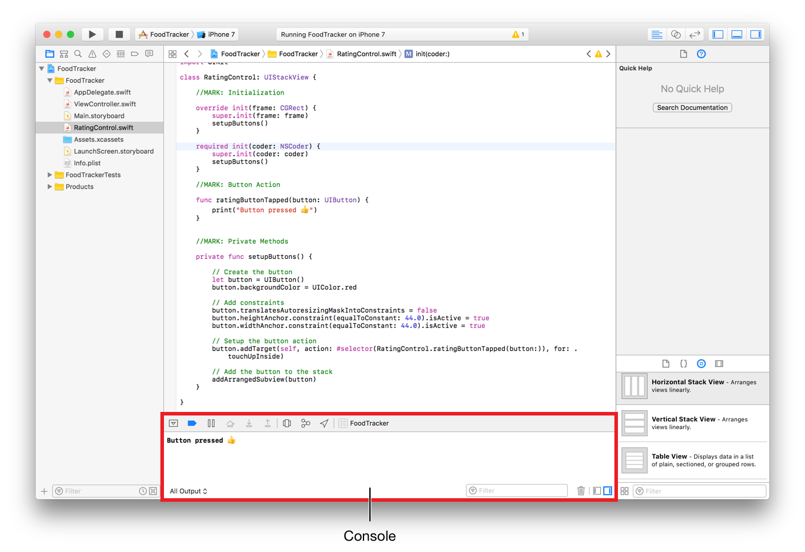
Now it’s time to think about what pieces of information the RatingControl class needs to have in order to represent a rating. You’ll need to keep track of a rating value, as well as the buttons that a user taps to set that rating. You can represent the rating value with an Int, and the buttons as an array of UIButton objects.
今やRatingControlクラスが格付けを表すために持つ必要がある情報の部品は何かについて考える時です。あなたが必要とするのは、格付けの値の、それだけでなくユーザがその格付けを設定するためにタップするボタンの、最新の状態を把握することです。あなたは、格付けの値をIntを使って、そしてボタンをUIButtonオブジェクトの配列として表すことができます。
To add rating properties
格付けプロパティを加えるには
In RatingControl.swift, find the class declaration line:
RatingControl.swiftにおいて、クラス定義行を見つけてください：
classRatingControl: UIView {
Below this line, add the following code:
この行の下に、以下のコードを加えてください：
//MARK: Properties
privatevarratingButtons = [UIButton]()
varrating = 0
This creates two properties. The first is a property that contains the list of buttons. You don’t want to let anything outside the RatingControl class access these buttons; therefore, you declare them as private.
これは、２つのプロパティを作成します。最初のものは、ボタンのリストを含むプロパティです。あなたは、RatingControlクラスの外側のどんなものもそれらのボタンにアクセスするのを望みません；それゆえにあなたはそれらをプライベートとして定義します。
The Second property contains the control’s rating. You need to be able to both read and write this value from outside this class. By leaving it as internal access (the default), you can access it from any other class inside the app.
２番目のプロパティは、コントロールの持つ格付けを含みます。あなたは、この値の読み書き両方をこのクラスの外部から可能にする必要があります。それを内部アクセス（初期状態）のままにしておくことによって、あなたはそれにアプリの内部の何らかの他のクラスからアクセスできます。
Right now, you have one button in the view, but you need five total. To create a total of five buttons, use a for-in loop. A for-in loop iterates over a sequence, such as ranges of numbers, to execute a set of code multiple times. Instead of creating one button, the loop will create five.
今のところ、あなたはひとつのボタンをこのビューに持ちます、しかしあなたが必要なのは全部で５つです。合計５つのボタンを作成するために、for-inループを使ってください。for-inループは、あるシーケンス（列、一続きのもの）のすべてに渡って繰り返して行きます、例えばある範囲の数などに対して、そうして一組にされたコードを複数回実行します。１つのボタンを作成するのではなく、このループは５つ作成します。
To create a total of five buttons
合計５つのボタンを作成するには
In RatingControl.swift, find the setupButtons() method, and add a for-in loop around the method’s contents, like this:
RatingControl.swiftにおいて、setupButtons()メソッドを見つけてください、for-inループをこのメソッドの内容の周りに加えてください、このように：
Make sure the lines in the for-in loop are indented properly by selecting all of them and pressing Control-I.
for-inループの中の行が、それらの全てを選択してコントロール-Iを押すことによってふさわしく字下げされることを確かめてください。
The half-open range operator (..<) doesn’t include the upper number, so this range goes from 0 to 4 for a total of five loop iterations, drawing five buttons instead of just one. The underscore (_) represents a wildcard, which you can use when you don’t need to know which iteration of the loop is currently executing.
半開範囲演算子（..<）は、高い方の数を含みません、それでこの範囲は0から4になり合計５回ループを繰り返して、５つのボタンを描画します、１つではなく。アンダースコア（_）は、ワイルドカード（万能札）を表します、それはループのどの繰り返しが現在実行されているかをあなたが知る必要がない時に使うことができるものです。
Add the following just above the for-in loop’s closing curly brace (}).
以下をfor-inループの閉じ波確固（}）のすぐ上に加えてください。
// Add the new button to the rating button array
ratingButtons.append(button)
As you create each button, you add it to the ratingButtons array to keep track of it.
あなたが各ボタンを作成するとき、あなたはそれをratingButtons配列に加えてそれの最新の状態を把握するようにします。
Your setupButtons() method should now look like this:
あなたのsetupButtons()は、今やこのように見えるはずです：
Checkpoint: Run your app. Notice how the stack view lays out the buttons. They are arranged horizontally, but there’s no space between them—making them look like a single, red block.
確認点：あなたのアプリを実行します。どのようにスタックビューがボタンを配置するかにしてください。それらは横には整えられます、しかしそれらの間の空きがありません — それらは単一の、赤いブロックのように見えます。
To fix this, open Main.storyboard and select the RatingControl stack view. Open the Attributes inspector, and set the Spacing attribute to 8.
これを修正するために、Main.storyboardを開いてRatingControlスタックビューを選択してください。Attributesインスペクタを開いて、Spacing属性を8に設定してください。
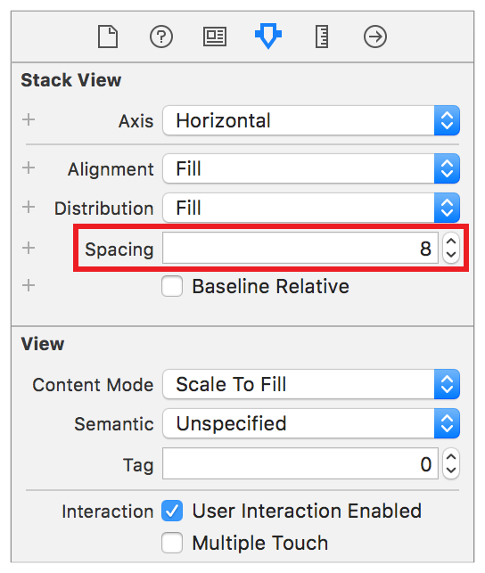
Checkpoint: Run your app again. Now, the buttons should be laid out as expected. Note, clicking any of the buttons at this point should still call the ratingButtonTapped(button:) method and log the message to the console.
確認点：再びあなたのアプリを実行します。今では、ボタンは期待されるように配置されるはずです。注意してください、何らかのボタンをこの時点でクリックすることはまだratingButtonTapped(button:)メソッドを呼び出さず、コンソールにメッセージを記録します。
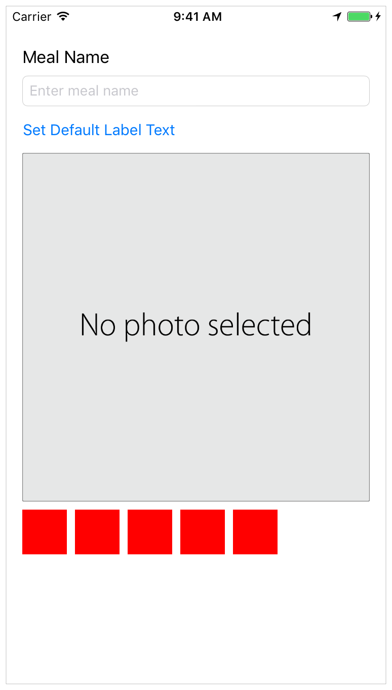
To collapse the console, use the Debug area toggle.
コンソールを折り畳むためには、Debug区画切り替えボタンを使ってください。
Add Support for Interface Builder
Interface Builderに対するサポートを加える
If you look at the rating control in Interface Builder, you’ll notice that it’s displayed as a large, empty rectangle. Worse yet, if you select the rating control, its bounding box turns red, indicating that there’s a problem with the control’s layout. In fact, there are two other indications that something might be wrong. There’s a yellow warning triangle in the right side of the Activity viewer. There’s also a red error icon beside the View Controller Scene in the Outline view.
あなたが格付けコントロールをInterface Builderで見つけるならば、あなたはそれが大きな、空の長方形として表示されるのに気づくでしょう。まだ悪いことに、あなたが格付けコントロールを選択するならば、それの境界ボックスは赤になり、コントロールのレイアウトで問題があることを指し示しています。事実、何か間違っているかもしれないことを指し示すものが他に２つあります。黄色い警告三角形がActivityビューアの右端にあります。また赤いエラーアイコンがView Controller Sceneの隣にOutlineビューにおいて存在します。
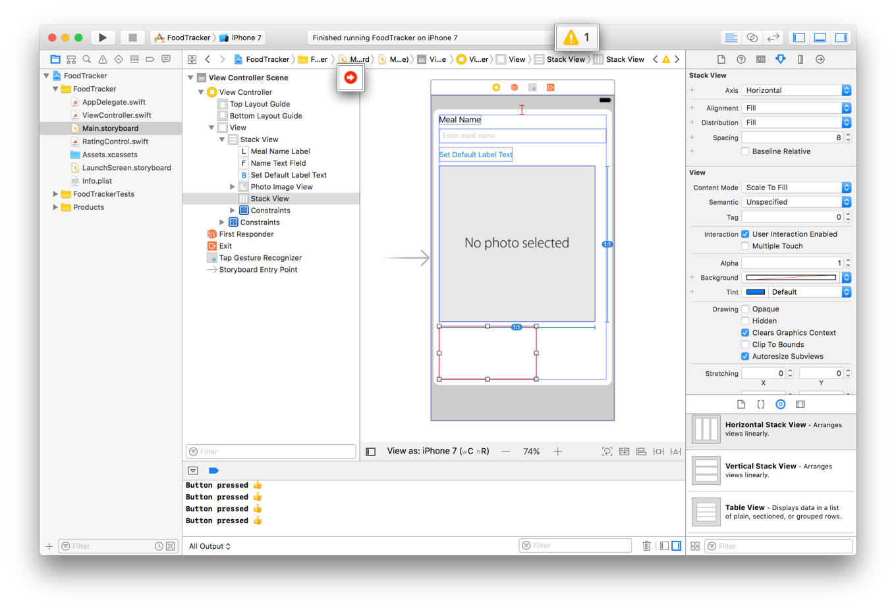
If you click these icons, Xcode shows additional information about the errors and warnings.
あなたがそれらのアンコンをクリックするならば、Xcodeはエラーと警告について追加情報を示します。
In both cases, the root cause is the same. Interface Builder does not know anything about the contents of your rating control. To fix this, you define the control as @IBDesignable. This lets Interface Builder instantiate and draw a copy of your control directly in the canvas. Additionally, now that Interface Builder has a live copy of your control, its layout engine can properly position and size the control.
両方の場合において、根本的原因は同じです。Interface Builderは、あなたの格付けコントロールの内容について何も知りません。これを修正するために、あなたはコントロールを@IBDesignableとして定義します。これは、Interface Builderにあなたのコントロールのコピーを直接にキャンバスの中にインスタンス化させて描画させます。加えて、Interface Builderがあなたのコントロールの本物のコピーを持つ今では、それのレイアウトエンジンは適切にコントロールの位置と大きさを決めます。
To declare the control as @IBDesignable
コントロールを@IBDesignableとして宣言するには
In RatingControl.swift, find the class declaration:
RatingControl.swiftにおいて、クラス宣言を見つけてください：
classRatingControl: UIStackView {
Add @IBDesignable to the beginning of the line as shown:
@IBDesignableを行の始まりに次に示すように加えてください：
@IBDesignableclassRatingControl: UIStackView {
Rebuild the project by typing Command-B (or choosing Product > Build).
プロジェクトをコマンド-Bをタイプすること（またはProduct > Buildを選ぶこと）によって再ビルドしてください。
Open Main.storyboard. Once the build completes, the storyboard shows a live view of your rating control.
Main.storyboardを開いてください。一旦ビルドが完了したならば、ストーリーボードはあなたの格付けコントロールのライブビューを示します。
Notice that the canvas now correctly sizes and places your RatingControl view. As a result, the warnings and errors are now gone.
キャンバスが今では正確にあなたのRatingControlビューの大きさと場所を決めることに注意してください。結果として、警告とエラーは今では去りました。
Interface Builder can do more than just display your custom view. You can also specify properties that can then be set in the Attributes inspector. Add the @IBInspectable attribute to the desired properties. Interface Builder supports the inspection of basic types (and their corresponding optionals), including: Booleans, numbers, strings, as well as CGRect, CGSize, CGPoint, and UIColor.
Interface Builderは、あなたのカスタムビューを表示するだけでなくもっと多くを行うことができます。あなたはまた幾つかのプロパティを指定でき、それらは後でAttributesインスペクタで設定されることができます。@IBInspectable属性を望むプロパティに加えてください。Interface Builderは、基本的な型（およびそれらの関連するオプショナル）の調査をサポートします、含むのは：ブール、数、文字列、それだけでなくCGRect、CGSize、CGPoint、そしてUIColor。
To add inspectable properties
調査可能なプロパティを加えるには
In RatingControl.swift, add the following properties to the bottom of the //MARK: Properties section:
RatingControl.swiftにおいて、以下のプロパティを//MARK: Propertiesセクションのボタンに加えてください：
These lines define the size of your buttons and the number of buttons in your control.
これらの行は、あなたのボタンの大きさとあなたのコントロールの中のボタンの数を定義します。
Now you need to use these values. Locate the setupButtons() method, and make the following changes:
今度はあなたはこれらの値を使うことを必要とします。setupButtons()メソッドの位置を突き止めて、以下の変更をしてください：
In the for-in declaration, change 5 to starCount.
for-in宣言において、5をstarCountに変えてください。
In the button.heightAnchor.constraint() method call, change 44.0 to starSize.height.
button.heightAnchor.constraint()メソッド呼び出しにおいて、44.0をstarSize.heightに変えてください。
In the button.widthAnchor.constraint() method call, change 44.0 to starSize.width.
button.widthAnchor.constraint()メソッド呼び出しにおいて、44.0をstarSize.widthに変えてください。
The method should appear as shown below:
メソッドは下に示すように現れるはずです：
If you switch to the Main.storyboard and select the RatingControl, you’ll see the Star Size and Star Count settings in the Attributes inspector. The dashes indicate that the control is currently using the default values (in this case 44.0 points and 5 stars). However, changing these values does not yet change the control.
あなたがMain.storyboardに切り替えてRatingControlを選択するならば、あなたは、Star SizeとStar Count設定をAttributesインスペクタで見るでしょう。ダッシュは、コントロールが現在は省略時の値を使っていることを示します（この場合44.0ポイントと5スター）。しかしながら、それらの値を変えることはまだコントロールを変えません。
To update the control, you need to reset the control’s buttons every time these attributes change. To do that, add a property observer to each property. A property observer observes and responds to changes in a property’s value. Property observers are called every time a property’s value is set, and can be used to perform work immediately before or after the value changes.
コントロールを更新するには、あなたはコントロールの持つボタンをそれら属性を変えるたびごとに再設定する必要があります。それをするために、プロパティオブザーバを各プロパティに加えてください。プロパティオブザーバ（プロパティ監視者）は、監視と応答をあるプロパティの持つ値における変化に対して行います。プロパティオブザーバは、あるプロパティの値が設定される時すべてに呼ばれます、そしてその値が変化する直前または直後に作業を実行するために使われることができます。
In RatingControl.swift, modify the inspectable properties as shown below:
RatingControl.swiftにおいて、調査可能なプロパティを以下に示すように修正してください：
Here, you define property observers for the starSize and starCount properties. Specifically, the didSet property observer is called immediately after the property’s value is set. Your implementation then calls the setupButtons() method. This method adds new buttons using the updated size and count; however, the current implementation doesn’t get rid of the old buttons.
ここで、あなたはプロパティオブザーバをstarSizeとstarCountプロパティに対して定義します。具体的には、didSetプロパティオブザーバは、プロパティの値が設定された直後に呼ばれます。あなたの実装は、それからsetupButtons()メソッドを呼び出します。このメソッドは、新しいボタンを更新された大きさと数を使って追加します；しかしながら、現在の実装は古いボタンの除去をしません。
To clear out the old buttons, add the following code to the beginning of the setupButtons() method.
古いボタンを処分するには、以下のコードをsetupButtons()メソッドの始まりに加えます。
// clear any existing buttons
forbuttoninratingButtons {
removeArrangedSubview(button)
button.removeFromSuperview()
}
ratingButtons.removeAll()
This code iterates over all of the rating control’s buttons. First, it removes the button from the list of views managed by the stack view. This tells the stack view that it should no longer calculate the button’s size and position—but the button is still a subview of the stack view. Next, the code removes the button from the stack view entirely. Finally, once all the buttons have been removed, it clears the ratingButtons array.
このコードは、格付けコントロールの持つボタンのすべてにわたって反復します。まず、それはボタンをスタックビューによって管理されるビューのリストから削除します。これは、スタックビューにそれはもはやボタンの大きさと位置を計算すべきでないことを伝えます — しかしボタンはまだスタックビューのサブビューの１つです。次に、コードはボタンをスタックビューから完全に削除します。最後に、一旦すべてのボタンが削除されてしまうならば、それはratingButtons配列を片付けます。
The setupButtons() method should now appear as shown below:
setupButtons()メソッドは、今では下で示すように現れます：
Checkpoint: Open Main.storyboard and select the RatingControl object. Try changing the Star Size and Star Count attributes. The control in the canvas should change to match the new settings. Run the app, and you should see the changes in the simulator.
確認点：Main.storyboardを開いて、RatingControlオブジェクトを選択してください。Star SizeとStar Count属性の変更を試みてください。キャンバスの中のコントロールは、新しい設定に合うように変わるはずです。アプリを実行します、するとあなたはシミュレータにおいて変更を見るはずです。
Be sure to reset these settings to their default values when you are done testing them.
これらの設定をそれらの省略時の値に設定し直すことをあなたがそれらのテストを終えた時に確実にしてください。
Add Star Images to the Buttons
星の画像をボタンに加える
Next, you’ll add images of an empty, filled, and highlighted star to the buttons.
今度は、あなたは空の、塗りつぶされた、そして強調された星の画像をボタンに加えます。
You can find the images shown above within the Images/ folder of the downloadable file at the end of this lesson, or use your own images. (Make sure the names of the images you use match the image names in the code later.)
あなたは、上で見せた画像をこのレッスンの終わりでダウンロード可能なファイルのImages/フォルダ内で見つけることができます、またはあなた独自の画像を使うことができます。（あなたの使う画像の名前が後のコードでの画像名と一致することを確実にしてください。）
To add images to your project
いくらかの画像をあなたのプロジェクトに加えるには
In the project navigator, select Assets.xcassets to view the asset catalog.
プロジェクトナビゲータにおいて、Assets.xcassetsを選択してアセットカタログ（資産目録）を眺めてください。
Recall that the asset catalog is a place to store and organize your image assets for an app.
思い出してください、アセットカタログはあなたのアプリのためのあなたの画像資産を格納し整理するところです。
In the bottom left corner, click the plus (+) button and choose New Folder from the pop-up menu.
１番下左隅で、プラスボタン（+）をクリックしてNew Folderをポップアップメニューから選んでください。
Double-click the folder name and rename it Rating Images.
フォルダ名をダブルクリックして、それの名前をRating Imagesに変えてください。
With the folder selected, in the bottom left corner, click the plus (+) button and choose New Image Set from the pop-up menu.
そのフォルダが選択された状態で、１番下左隅で、プラス（+）ボタンをクリックしてNew Image Set（新規画像セット）をポップアップメニューから選んでください。
An image set represents a single image asset, but can contain different versions of the image to display at different screen resolutions.
画像セットはただ１つだけ画像資産を表示します、しかし異なるバージョンの画像を含むことで異なる画面解像度で表示することができます。
Double-click the image set name and rename it emptyStar.
画像セットの名前をダブルクリックして、その名前をemptyStarに変えてください。
On your computer, select the empty star image you want to add.
あなたのコンピュータ上で、あなたが加えようと思う空の星の画像を選択してください。
Drag and drop the image into the 2x slot in the image set.
その画像を画像セットの2xの挿入位置にドラック＆ドロップしてください。
2x is the display resolution for iPhone 7 Simulator that you’re using in these lessons, so the image will look best at this resolution.
2xは、iPhone 7シミュレータ用の画面解像度で、あなたがこのレッスンで使っているものです、それでこの解像度でその画像は最もよく見えるでしょう。
In the bottom left corner, click the plus (+) button and choose New Image Set from the pop-up menu.
１番下左隅で、プラス（+）ボタンをクリックしてNew Image Setをポップアップメニューから選んでください
Double-click the image set name and rename it filledStar.
画像セットの名前をダブルクリックして、その名前をfilledStarに変えてください。
On your computer, select the filled-in star image you want to add.
あなたのコンピュータ上で、あなたが加えようと思う塗りつぶされた星の画像を選択してください。
Drag and drop the image into the 2x slot in the image set.
その画像を画像セットの2xの挿入位置にドラック＆ドロップしてください。
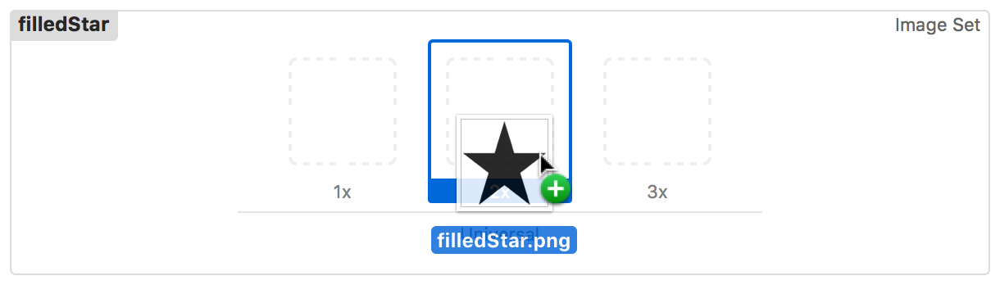
In the bottom left corner, click the plus (+) button and choose New Image Set from the pop-up menu.
１番下左隅で、プラス（+）ボタンをクリックしてNew Image Setをポップアップメニューから選んでください
Double-click the image set name and rename it highlightedStar.
画像セットの名前をダブルクリックして、その名前をhighlightedStarに変えてください。
On your computer, select the filled-in star image you want to add.
あなたのコンピュータ上で、あなたが加えようと思う塗りつぶされた星の画像を選択してください。
Drag and drop the image into the 2x slot in the image set.
その画像を画像セットの2xの挿入位置にドラック＆ドロップしてください。
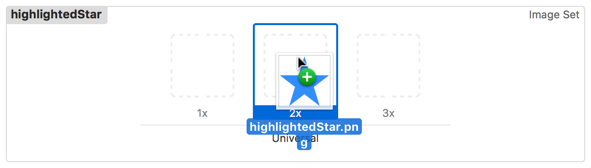
Your asset catalog should look something like this:
あなたのアセットカタログはこのようなものに見えるはずです：
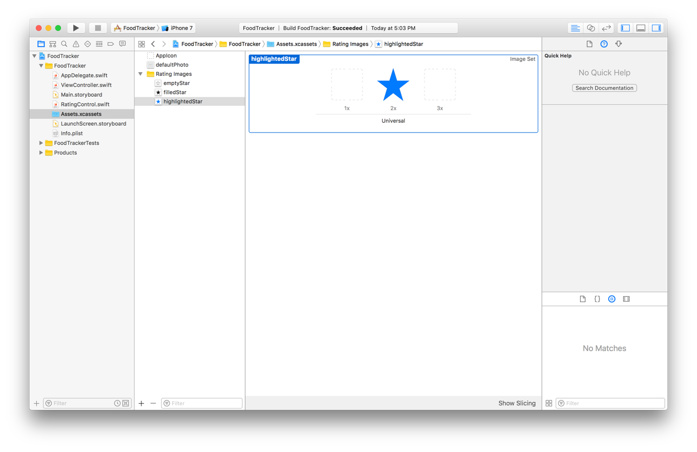
Next, write the code to set the appropriate image for a button at the right time.
次に、コードを書いて適切な画像をボタンに対して正しいときに設定するようにします。
To set star images for the buttons
星画像をボタンに設定するには
In RatingControl.swift, navigate to the setupButtons() method, and add this code just above the for-in loop that creates the buttons:
RatingControl.swiftにおいて、setupButtons()メソッドに進み、このコードをボタンを作成するfor-inループのすぐ上に加えてください：
These lines load the star images from the assets catalog. Note that the assets catalog is located in the app’s main bundle. This means that the app can load the images using the shorter UIImage(named:) method. However, because the control is @IBDesignable, the setup code also needs to run in Interface Builder. For the images to load properly in Interface Builder, you must explicitly specify the catalog’s bundle. This ensures that the system can find and load the image.
それらの行は、星画像をアセットカタログからロードします。アセットカタログはアプリの持つメインバンドルの中にロードされることに注意してください。これは、アプリは画像をより短いUIImage(named:)メソッドを使ってロードできるのを意味します。しかしながら、コントロールは@IBDesignableであることから、準備コードもまたInterface Builderにおいて動作する必要があります。画像をInterface Builderにおいて適切にロードするために、あなたは明示的にカタログの持つバンドルを指定しなければなりません。これは、システムが画像を見つけてロードできるのを確実にします。
Find the line that sets the background color (button.backgroundColor = UIColor.redColor()) and replace it with the following:
背景色を設定する行（button.backgroundColor = UIColor.redColor()）を見つけて、それを以下と置き換えてください：
Buttons have five different states: normal, highlighted, focused, selected, and disabled. By default, the button modifies its appearance based on its state, for example a disabled button appears grayed out. A button can be in more than one state at the same time, such as when a button is both disabled and highlighted.
ボタンは、５つの異なる状態を持ちます：通常、強調、フォーカス、選択、そして使用不能。省略時では、ボタンはそれの外観をそれの状態に基づいて修正します、例えば使用不能ボタンはグレイアウトされて現れます。ボタンは、同時にひとつ以上の状態になることができます、例えばあるボタンが使用不能と強調の両方であるなど。
Buttons always start in the normal state (not highlighted, selected, focused, or disabled). A button is highlighted whenever the user touches it. You can also programmatically set a button to be selected or disabled. The focused state is used by focus-based interfaces, like Apple TV.
ボタンは、常に通常状態で始まります（強調、選択、フォーカス、または使用不能ではなく）ボタンは、ユーザがそれをタッチするときはいつでも強調されます。あなたはまた、プログラム的にボタンを選択または使用不能にされるようにできます。フォーカス状態は、フォーカス基盤のインターフェイスによって使用されます、Apple TVのように。
In the code above, you are telling the button to use the empty star image for the normal state. This is the button’s default image. The system uses this image (possibly with an added effect) whenever a state or combination of states doesn’t have an image of their own.
上のコードにおいて、あなたは空の星画像を通常状態のために使うようボタンに伝えています。これは、ボタンの持つ省略時の画像です。システムは、ある状態または幾つかの状態の組み合わせがそれら独自の画像を持たないときはいつでもこの画像を（ことによると追加の効果と共に）使います。
Next, the code above sets the filled image for the selected state. If you programmatically set the button as selected, it will change from the empty star to the filled star.
次に、上のコードは塗りつぶされた画像を選択済状態に対して設定します。あなたがプログラム的にボタンを選択されると設定するならば、それは空の星から塗りつぶされた星へと変わるでしょう。
Finally, you set the highlighted image for both the highlighted and the selected and highlighted states. When the user touches the button, whether or not it is selected, the system will show the highlighted button image.
最後に、あなたは強調画像を強調状態および選択・強調状態の両方に対して設定します。ユーザがボタンにタッチする場合、それが選択されるかどうかに関係なく、システムはボタン画像を強調して示すでしょう。
Your setupButtons() method should look like this:
あなたのsetupButtons()メソッドはこのように見えるはずです：
Checkpoint: Run your app. You should see stars instead of red buttons. Tapping any of the buttons at this point should still call ratingButtonTapped(_:) and log the message to the console. You’ll even see the blue highlighted star while you are touching the button, but your buttons don’t change to the filled images yet. You’ll fix that next.
確認点：あなたのアプリを実行します。あなたは、赤いボタンの代わりに星を見るはずです。ボタンのどれかをタップすると、この時点ではまだratingButtonTapped(_:)を呼び出してメッセージをコンソールに記録するはずです。あなたは、青く強調された星をあなたがボタンをタッチしている間は見さえするでしょう、しかしあなたのボタンは塗りつぶされた画像へとまだ変化しません。あなたはこれを次に修正します。
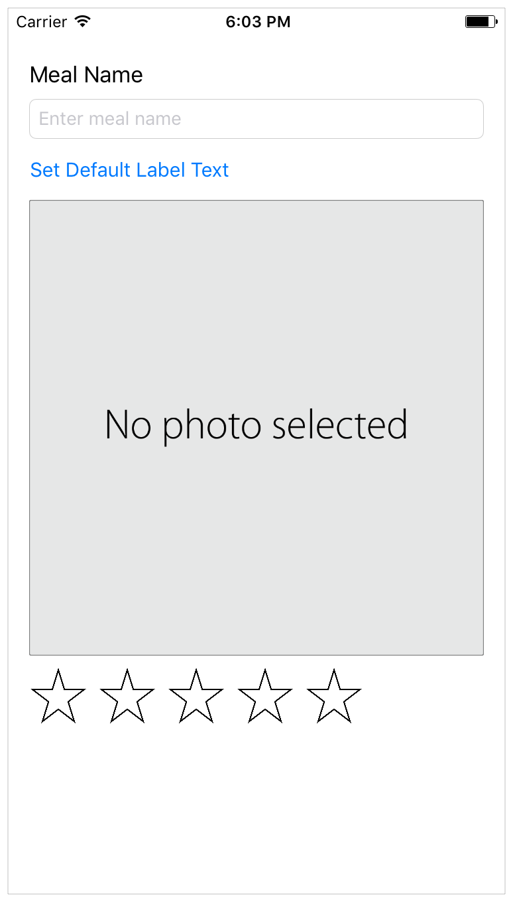
Implement the Button Action
ボタンアクションの実装
The user needs to be able to select a rating by tapping a star, so you’ll replace the debugging implementation with a real implementation of the ratingButtonTapped(_:) method.
ユーザが必要とするのは、格付けの選択がある星のタップによってできることです、それであなたはデバック実装を実際の実装のratingButtonTapped(_:)メソッドで置き換えます。
To implement the rating action
格付けアクションを実装するには
In RatingControl.swift, find the ratingButtonTapped(button:) method:
RatingControl.swiftにおいて、ratingButtonTapped(button:)メソッドを見つけてください：
funcratingButtonTapped(button: UIButton) {
print("Button pressed 👍")
}
Replace the print statement with this code:
print文をこのコードと置き換えてください：
fatalError("The button, \(button), is not in the ratingButtons array: \(ratingButtons)")
}
// Calculate the rating of the selected button
letselectedRating = index + 1
ifselectedRating == rating {
// If the selected star represents the current rating, reset the rating to 0.
rating = 0
} else {
// Otherwise set the rating to the selected star
rating = selectedRating
}
}
In the code above, the indexOf(_:) method attempts to find the selected button in the array of buttons and to return the index at which it was found. This method returns an optional Int because the instance you’re searching for might not exist in the collection you’re searching. However, because the only buttons that trigger this action are the ones you created and added to the array, if the indexOf(_:) method cannot find a matching button, you have a serious bug in your code. Throwing a fatal error here terminates the app and prints a useful error message to the console, helping you find and fix any problems while you design and test your app.
上のコードにおいて、indexOf(_:)メソッドが試みるのは、選択されたボタンをボタン配列の中で見つけること、そしてそれが見つかったのはどのインデックスかを返すことです。このメソッドは、オプショナルのIntを返します、なぜならあなたが探しているインスタンスがあなたがそこで見つけようとしているコレクションの中に存在しないかもしれないからです。しかしながら、このアクションを引き起こすボタンのみが、あなたが作成してこの配列に加えたものなので、indexOf(_:)メソッドが一致するボタンを見つけることができないならば、あなたはゆゆしいバグをあなたのコードの中に持ちます。ここでの致命的なエラーのスローは、アプリを終了して役に立つエラーメッセージをコンソールに出力して、あなたがあなたのアプリを設計してテストする間あなたが何らかの問題を見つけて修正する助けとなります。
Once you have the button’s index (in this case a value from 0 to 4), you add 1 to the index to calculate the selected rating (giving you a value from 1 to 5). If the user tapped the star that corresponds with the current rating, you reset the control’s rating property to 0. Otherwise, you set the rating to the selected rating.
一旦あなたがボタンのインデックスを持つならば（この場合には０から４までの値）、あなたは１をインデックスに加えて選択された格付けを計算します（１から５までの値をあなたに与えます）。現在の格付けに相当する星をユーザがタップしたならば、あなたはコントロールの持つratingプロパティをゼロへとリセットします。そうでなければ、あなたはratingを選択された格付けへ設定します。
Once the rating is set, you need some way to update the button’s appearance. In RatingControl.swift, before the last curly brace (}), add the following method:
一旦格付けが設定されたならば、あなたはボタンの外観を更新するための何らかの方法を必要とします。RatingControl.swiftにおいて、最後の波括弧（}）の前に、以下のメソッドを加えてください：
privatefuncupdateButtonSelectionStates() {
}
This is a helper method that you’ll use to update the selection state of the buttons.
これはヘルパーメソッド（お手伝いさんメソッド）です、あなたはそれを使ってボタンの選択状態を更新するようにします。
In the updateButtonSelectionStates() method, add the following for-in loop:
updateButtonSelectionStates()メソッドにおいて、以下のfor-inループを加えてください：
privatefuncupdateButtonSelectionStates() {
for (index, button) inratingButtons.enumerated() {
// If the index of a button is less than the rating, that button should be selected. （あるボタンのインデックスが格付けより少ないならば、そのボタンは選択されるべき。）
button.isSelected = index < rating
}
}
This code iterates through the buttons and sets each one’s selected state based on its position and the rating. As you saw earlier, the selected state affects the button’s appearance. If the button’s index is less than the rating, the isSelected property is set to true, and the button displays the filled-in star image. Otherwise, the isSelected property is set to false, and the button shows the empty star image.
このコードはボタンのすべてに対して反復していって、それぞれのものの持つ選択済状態をそれの位置と格付けに基づいて設定します。あなたが前に見たように、選択済状態はボタンの外観に影響します。ボタンのインデックスが格付けより小さいならば、isSelectedプロパティはtrueへ設定されます、そしてボタンは塗りつぶされた星画像を表示します。それ以外では、isSelectedプロパティはfalseに設定され、ボタンは空の星画像を示します。
Add a property observer to the rating property, and have it call the updateButtonSelectionStates() method whenever the rating changes.
あるプロパティオブザーバをratingプロパティに加えてください、そしてそれがupdateButtonSelectionStates()メソッドを格付けが変化するときはいつでも呼ぶようにしてください。
varrating = 0 {
didSet {
updateButtonSelectionStates()
}
}
You also need to update the button’s selection state whenever buttons are added to the control. In the setupButtons() method, add a call to the updateButtonSelectionStates() method just above the method’s closing curly brace (}). The setupButtons() method should now look as shown below:
あなたはまた、ボタンがコントロールへ追加されるときはいつでもボタンの選択状態を更新する必要があります。setupButtons()メソッドにおいて、updateButtonSelectionStates()メソッドへの呼び出しをそのメソッドの閉じ波カッコ（}）のすぐ上に加えてください。setupButtons()メソッドは、今では下に示すように見えるはずです：
Checkpoint: Run your app. You should see five stars and be able to click one to change the rating. Click the third star to change the rating to 3, for example. Click the same star a second time. The control should reset to a zero-star rating.
確認点：あなたのアプリを実行します。あなたは、５つの星を見るはずです、そして１つクリックすることで格付けを変更できるはずです。例えば、３番目の星をクリックして格付けを３に変えてください。同じ星をもう一度クリックしてください。コントロールは星ゼロの格付けにリセットされるはずです。
Add Accessibility Information
アクセシビリティ情報を加える
With iOS built-in accessibility features, you can deliver an outstanding mobile experience to every customer, including those with special needs. These features include VoiceOver, Switch Control, playback of closed captioned or audio described video, Guided Access, Text to Speech, and more.
iOSの組み込みのアクセシビリティ機能で、あなたは傑出したモバイル体験をすべての顧客に送り届けることができます、それらは特別な必要性を持つものを含みます。これらの機能は、VoiceOver、Switch Control、聴力障害者用字幕付きまたは音声解説付きビデオの巻き戻し再生、Guided Access、Text to Speech、その他いろいろを含みます。
In most cases, users benefit from these features without any additional work on your part. VoiceOver, however, often requires a little attention. VoiceOver is a revolutionary screen reader for blind and low vision users. VoiceOver reads your user interface to the user. Although the default description of built-in controls provides a good starting point, you may need to optimize the presentation of your user interface; especially for custom views and controls.
多くの場合には、ユーザはこれらの機能から、あなたの受け持ちでの何らかの追加的作業なしで利益を受けます。VoiceOverは、しかしながら、しばしば少しの注意が必要とされます。VoiceOverは、視覚障害および低視力ユーザのための革命的な画面読み上げ機構です。VoiceOverは、あなたのユーザインターフェイスをユーザのために読み上げます。組み込みのコントロールの初期状態の解説は良い出発点を提供するとはいえ、あなたはあなたのユーザインターフェイスの表現を最適化する必要があるでしょう；とりわけカスタムビューおよびコントロールについて。
For the rating control, you need to provide three additional pieces of information for each button,
格付けコントロールのために、あなたは３つの追加的な部分の情報を各ボタンのために提供する必要があります、
Accessibility label. A short, localized word or phrase that succinctly describes the control or view, but does not identify the element’s type. Examples are “Add” or “Play.”
アクセシビリティラベル。 短い、ローカライズされた単語または語句で、簡潔にコントロールやビューを解説します、しかし要素の持つ型を識別しません。例は、「追加」や「再生」です。
Accessibility value. The current value of an element, when the value is not represented by the label. For example, the label for a slider might be “Speed,” but its current value might be “50%.”
アクセシビリティ値。 ある要素の現在の値、値がラベルによって表されない時に。例えば、あるスライダのためのラベルは「速度」であるかもしれません、しかしそれの現在の値は「50%」であるかもしれません。
Accessibility hint. A brief, localized phrase that describes the results of an action on an element. Examples are “Adds a title” or “Opens the shopping list.”
アクセシビリティヒント。 簡潔な、ローカライズされた語句で、ある要素に関するあるアクションの結果を解説します。例は、「タイトルを追加」や「買い物リストを開く」です。
In the rating control, each button’s accessibility label describes the value that the button sets. For example, the first button’s label says “Set 1 star rating.” The accessibility value contains the control’s current rating. For example, if you have a 4-star rating, the value says “4 stars set.” Finally, you assign a hint to the currently selected star that says, “Tap to reset the rating to zero.” All the other stars have a nil-valued hint, because their effects are already adequately described by their labels.
格付けコントロールでは、各ボタンの持つアクセシビリティラベルは、そのボタンが設定する値を解説します。例えば、最初のボタンの持つラベルは、「星１格付けを設定」と言います。アクセシビリティ値は、そのコントロールの持つ現在の格付けを含みます。例えば、あなたが星４格付けをするならば、その値は「星４を設定」と話します。最後に、あなたはあるヒントを現在選択される星に割り当てます、それは「タップして格付けをゼロにリセット」と話します。他の星すべては、nil値のヒントを持ちます、なぜならそれらの効果はすでにそれらのラベルによって妥当に解説されるからです。
To add accessibility labels, values, and hints
アクセシビリティ・ラベル、値、およびヒントを加えるには
In RatingControl.swift, navigate to the setupButtons() method. find the for-in declaration. Replace the placeholder loop variable (_) with index as shown:
RatingControl.swiftにおいて、setupButtons()メソッドに進んでください。for-in宣言を見つけてください。プレースホルダループ変数（_）をindexと置き換えてください、次に示すように：
forindexin0..<starCount {
Inside the for-in loop, just after the constraints, add the following code:
for-inループの内側で、制約のすぐ下に、以下のコードを加えてください：
// Set the accessibility label
button.accessibilityLabel = "Set \(index + 1) star rating"
This code calculates a label string using the button’s index, then assigns it to the button’s accessibilityLabel property.
このコードは、ラベル文字列をボタンの持つインデックスを使って算出します、それからそれをボタンのaccessibilityLabelプロパティに割り当てます。
The setupButtons() method should now look like this:
setupButtons()メソッドは今ではこのように見えるはずです：
Navigate to the updateButtonSelectionStates() method. Inside the for-in loop, add the following code just after the line that sets the button’s isSelected property.
updateButtonSelectionStates()メソッドに進んでください。for-inループの内側で、以下のコードを、ボタンのisSelectedプロパティを設定した行の直ぐ下に加えてください。
// Set the hint string for the currently selected star
lethintString: String?
ifrating == index + 1 {
hintString = "Tap to reset the rating to zero."
} else {
hintString = nil
}
// Calculate the value string
letvalueString: String
switch (rating) {
case0:
valueString = "No rating set."
case1:
valueString = "1 star set."
default:
valueString = "\(rating) stars set."
}
// Assign the hint string and value string
button.accessibilityHint = hintString
button.accessibilityValue = valueString
Here, you start by checking whether the button is the currently selected button. If it is, you assign a hint. If not, you set the button’s hintString property to nil.
ここでは、あなたはボタンが現在選択済ボタンかどうか調べることで始めます。そうであるならば、あなたはヒントを割り当てます。違うならば、あなたはボタンのhintStringプロパティをnilに設定します。
Next, you calculate the value based on the control’s rating. Use a switch statement to assign custom strings if the rating is 0 or 1. If the rating is greater than 1, you calculate the hint using string interpolation.
次に、あなたは値をコントロールの持つ格付けに基づいて計算します。switch文を使ってカスタム文字列を割り当ててください、もしratingが0または1なら。格付けが1より大きいならば、あなたはヒントを文字列補間を使って算出します。
Finally, assign these values to the accessibilityHint and accessibilityValue properties.
最後に、これらの値をaccessibilityHintとaccessibilityValueプロパティに割り当ててください。
When the user runs your app with VoiceOver enabled, when they touch one of the buttons, VoiceOver reads the button’s label, followed by the word button. Then it reads the accessibility value. Finally, it reads the accessibility hint (if any). This lets the user know both the control’s current value and the result of tapping the currently selected button.
ユーザがあなたのアプリをVoiceOverを有効にして実行する場合、彼らがボタンの１つをタッチする時、VoiceOverはボタンのラベルを、単語buttonの後に続けて読み上げます。それからそれはアクセシビリティ値を読み上げます。最後に、それはアクセシビリティヒントを読み上げます（もしあれば）。これは、ユーザにコントロールの持つ値と、現在選択されたボタンをタップする結果の両方を知らせます。
Connect the Rating Control to the View Controller
格付けコントロールをビューコントローラに接続する
The last thing you need to do to set up the rating control is to give the ViewController class a reference to it.
格付けコントロールの設定としてあなたが最後にしなければならないことは、ViewControllerクラスにそれへの参照を持たせることです。
To connect a rating control outlet to ViewController.swift
格付けコントロールアウトレットをViewController.swiftに接続するには
Open your storyboard.
あなたのストーリーボードを開いてください。
Click the Assistant button in the Xcode toolbar to open the assistant editor.
AssistantボタンをXcodeツールバーにおいてクリックしてアシスタントエディタを開いてください。
If you want more space to work, collapse the project navigator and utility area by clicking the Navigator and Utilities buttons in the Xcode toolbar.
あなたがもっと場所を必要とするならば、プロジェクトナビゲータとユーティリティ区画をNavigatorとUtilitiesボタンをXcodeツールバーにおいてクリックすることで折り畳んでください。
You can also collapse the outline view.
あなたはまたアウトラインビューも折り畳むことができます。
Select the rating control.
格付けコントロールを選択してください。
ViewController.swift displays in the editor on the right. (If it doesn’t, choose Automatic > ViewController.swift in the editor selector bar.)
ViewController.swiftは、エディタの右に表示されます。（そうでないならば、Automatic > ViewController.swiftをエディタセレクタバーで選んでください。）
Control-drag from the rating control on your canvas to the code display in the editor on the right, stopping the drag at the line below the photoImageView property in ViewController.swift.
あなたのキャンバス上の格付けコントロールから右のエディタの中のコード表示へコントロール-ドラッグして、ViewController.swiftの中のphotoImageViewプロパティの下の行でドラッグをやめてください。
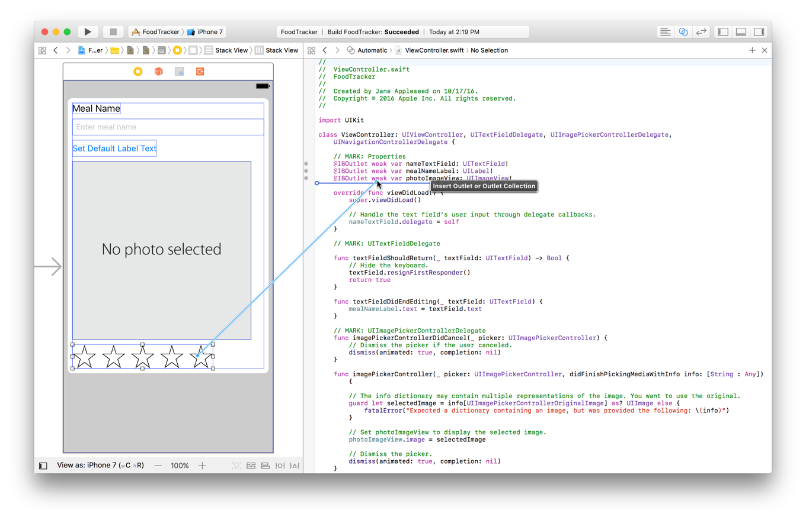
In the dialog that appears, for Name, type ratingControl.
現れたダイアログにおいて、名前に、ratingControlをタイプしてください。
Leave the rest of the options as they are. Your dialog should look like this:
残りのオプションはそれらのままにしておきます。あなたのダイアログはこのように見えるはずです：
Click Connect.
Connectをクリックしてください。
The ViewController class now has a reference to the rating control in the storyboard.
ViewControllerクラスは今ではストーリーボードの中の格付けコントロールに対する参照を持ちます。
Clean Up the Project
プロジェクトの掃除
You’re close to finalizing the meal scene’s user interface, but first you need to do some cleanup. Now that the FoodTracker app is implementing more advanced behavior and a different user interface than in the previous lessons, you’ll want to remove the pieces you don’t need. You’ll also center the elements in your stack view to balance the user interface.
あなたは、食事シーンのユーザインターフェイスの完成段階に近づいています、しかしまずあなたはいくらかの掃除をする必要があります。今ではFoodTrackerアプリは以前のレッスンに比べてより進んだ挙動と異なるユーザインターフェイスを実装しています、あなたは必要としない部分を取り除きたいでしょう。あなたはまた、あなたのスタックビューの要素の中心をとってユーザインターフェイスのつり合いをとりたいでしょう。
To clean up the UI
UIを掃除するには
Return to the standard editor by clicking the Standard button.
標準エディタにStandardボタンをクリックすることで戻ってください。
Expand the project navigator and utility area by clicking the Navigator and Utilities buttons in the Xcode toolbar.
プロジェクトナビゲータとユーティリティ区画をNavigatorとUtilitiesボタンをXcodeツールバーでクリックすることで広げてください。
Open your storyboard.
あなたのストーリーボードを開いてください。
Select the Set Default Label Text button, and press the Delete key to delete it.
Set Default Label Textボタンを選択します、そしてデリートキーを押してそれを消去してください。
The stack view rearranges your user interface elements to fill the gap that the button left.
スタックビューは、あなたのユーザインターフェイス要素を配列し直して下と左の隙間を埋めます。
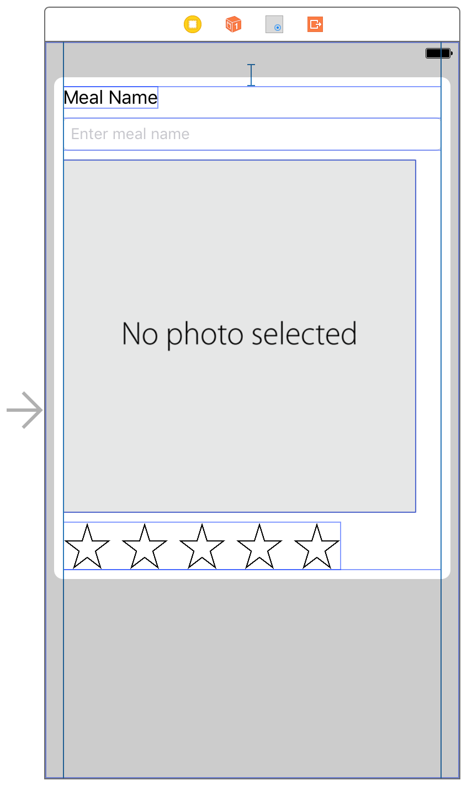
If necessary, open the outline view. Select the Stack View object.
必要なら、アウトラインビューを開いてください。Stack Viewオブジェクトを選択してください。
That’s all you need to delete for now. You’ll make a change to the label outlet (mealNameLabel) in a later lesson.
これが今のところあなたが削除に必要なすべてです。あなたは、あとのレッスンでラベルアウトレット（mealNameLabel）に変更を行います。
Checkpoint: Run your app. Everything should work exactly as before, but the Set Default Label Text button is gone, and the elements are centered horizontally. The buttons should be side-by-side. Clicking any of the buttons at this point should still call ratingButtonTapped(_:) and change the button images appropriately.
確認点：あなたのアプリを実行します。すべてのものが正確に以前と同じように働きます、しかしSet Default Label Textボタンはなくなりました、そして要素は水平方向の中心に置かれます。ボタンは横に並んでいるはずです。ボタンのどれかをクリックするとこの時点では依然としてratingButtonTapped(_:)が呼び出されます、そしてボタン画像は適切に変化します。
Wrapping Up
まとめ
In this lesson, you learned how to build a custom control that can be displayed in Interface Builder. The control also exposes properties that can be modified in the Attributes inspector. Finally, you added accessibility information, ensuring that the control works well with Voice Over.
このレッスンでは、あなたはカスタムコントロールをビルドする方法を学びました、それはInterface Builderで表示されることができます。コントロールはまた、Attributesインスペクタで修正可能なプロパティを外界に触れさせます。最後に、あなたはアクセシビリティ情報を加えて、コントロールがVoice Overでうまく機能することを確かなものにしました。
Next, you will design and connect the app’s data model.
次に、あなたはアプリのデータモデルの設計および接続をすることになります。


 .
.


 .
.